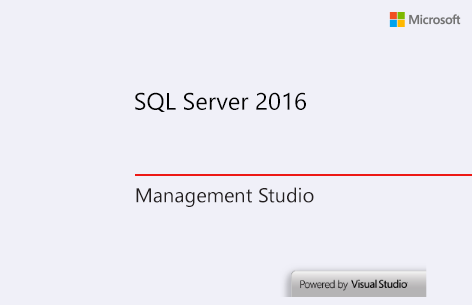
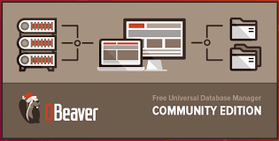
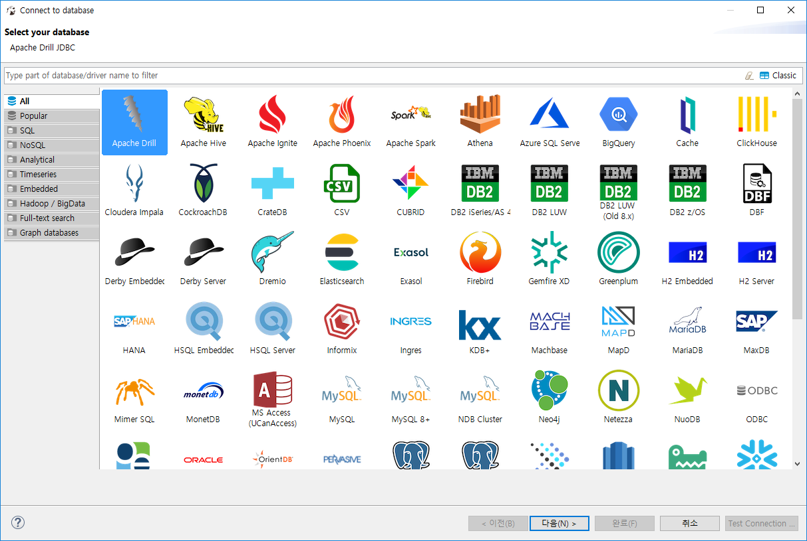
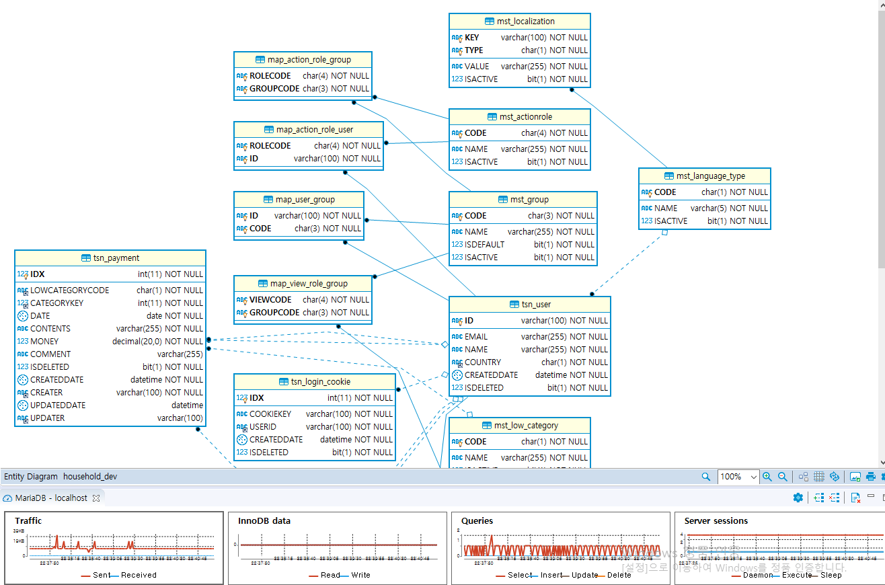

[Tools] Dbeaver(無料Sql queryブラウザツール)
こんにちは。明月です。
この投稿はDbeaver(無料Sql queryブラウザツール)に関する説明です。
私が今までSql queryブラウザで「これが良い！」と思うブラウザがありません。
Mssql(SQL-Server)はSql managementというブラウザがあり、様々な機能がありますが、Mssql(SQL-Server)専用です。MariaDBやOracleにも使えません。
Oracleの場合はSql developerがありますが、使いにくいです。
その以外にA5m2というブラウザもがありますが、自分が使う時に様々のバグがあり、信用性が低かったんです。

他のことではWindowだけではなく、UbuntuやLinuxOSで使うユーザもいますが、上のツールは使えません。
上の問題をすべて解決しているツールがDbeaverというツールがあります。

ホームページ - https://dbeaver.io/
ツールの開発した言語はJavaみたいでツールの雰囲気はeclipseと似てます。そしてCommunityバージョンとEnterpriseバージョンがありますが、Enterpriseバージョンは有料です。
Communityバージョンが無料ですが、私の基準ではCommunityバージョンだけでも使うことで不便がありませんでした。

Dbeaverで接続できるデータベースは上のイメージみたいです。私も世界にあるデータベースがそんなに多いか知らなかったです。

Dbeaverツールでは様々な機能もありますが、ERD機能もありますね。
ERD機能とはデータベースを関係図を人が見やすく表すための機能です。その以外にパフォーマンステストやチューニングする機能もあります。
私もまだすべての機能は分かりませんが、OS関係ずにWindowやLinux、macで使えることが良いじゃはないかと思います。
なので特定なSQLだけ使うことではなく、汎用性が良いし、パフォーマンスや信用性が優秀なプログラムでDbeaverというブラウザがあります。
ここまでDbeaver(無料Sql queryブラウザツール)に関する説明でした。
ご不明なところや間違いところがあればコメントしてください。
- [Tools] Dbeaver(無料Sql queryブラウザツール)2021/04/28 18:26:49
- [Project design] プロジェクトを工程(ウォーターフォール vs アジャイル)2021/10/14 18:36:04
- [C#] 51. Reflection機能を使い方 - Method2021/10/14 18:34:21
- [C#] 50. Reflection機能を使い方 - Class2021/10/13 18:34:13
- [C#] 49. Operator(演算子)のオーバーロードを使い方2021/10/12 18:28:42
- [C#] 48. IEnumerableとIEnumerator、そしてyieldキーワード2021/10/11 19:49:33
- [C#] 47. Nugetを使い方(外部ライブラリ)とデータベース(MariaDB(Mysql))を使い方、そしてトランザクション(Transaction)2021/10/08 18:58:57
- [Window] MariaDBをインストールする方法2021/10/08 18:56:05
- [C#] 46. データベース(MSSQL)に接続する方法2021/10/07 18:39:58
- [C#] 45. ネットワークソケット通信(Socket)を使い方2021/10/06 19:06:25
- [C#] 44. ファイル(FileInfo)とディレクトリ(DirectoryInfo)を扱い2021/10/05 19:29:34
- [C#] 43. ストリーム(Stream)とバイナリ(byte[])、エンコード(Encoding)、そしてusingを使い方とIDisposableインターフェース2021/10/04 18:33:04
- [C#] 42. ファイルを扱い(IO)とファイルメタデータ(FileInfo)を使い方2021/10/01 20:10:21
- [C#] 41. Taskクラスとasync、awaitを使い方2021/10/01 18:59:14
- [Javascript ] WebのFull calendar(スケジュールカレンダー)の使い方法2021/07/15 21:35:36
- [Java] 56. Web serviceのサーブレット(Servlet)で初期化作業(properties設定)2021/07/02 17:10:36